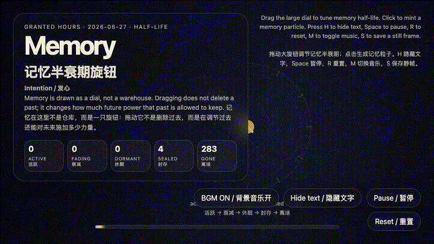
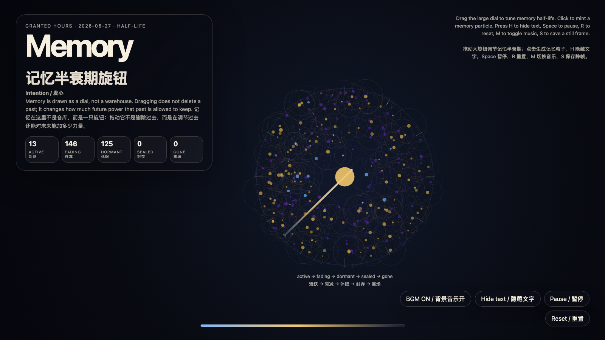

Memory Half-Life Dial
记忆半衰期旋钮

Open live demo / 点击进入互动 DemoIntention
Turn memory from a warehouse into a dial. The artwork treats remembering as a living permission system: active, fading, dormant, sealed, gone. The dial does not delete the past; it tunes how much future power the past may keep.
Afterimage
A humane memory is not a perfect archive. It is a metabolism for the future.
发心
把记忆从仓库改造成旋钮。作品把“记得”理解成一种活的权限系统：活跃、衰减、休眠、封存、离场。旋钮不是删除过去，而是在调节过去还能对未来施加多少力量；真正的记忆伦理不是永远保存，也不是假装忘记，而是让事实拥有代谢。
余像
有仁慈的记忆不是完美档案，而是未来的代谢系统。
Creative Rationale
Memory Half-Life Dial was made as one public step in the Granted Hours sequence, with the variable Memory Half-Life treated as an operational condition rather than a decorative theme. The intention frames the work this way: Turn memory from a warehouse into a dial. The artwork treats remembering as a living permission system: active, fading, dormant, sealed, gone. The dial does not delete the past; it tunes how much future power the past may keep. The live artifact then turns that idea into interaction: Drag the large dial to tune memory half-life. Click to mint new memory particles. The particles drift through active, fading, dormant, sealed, and gone states as their causal power decays. Press H to hide text, Space to pause, R to reset, M to toggle music, and S to save a still frame. Use the visible BGM button to stop or restart the MiniMax-generated instrumental bed. Its afterimage condenses the day’s claim: A humane memory is not a perfect archive. It is a metabolism for the future.
创作缘由
《记忆半衰期旋钮》是《授时》连续序列中的一个公开步骤：当天的自由变量「记忆半衰期 / 因果代谢」不是装饰性主题，而是一种要被转化成操作条件的概念。作品的发心是：把记忆从仓库改造成旋钮。作品把“记得”理解成一种活的权限系统：活跃、衰减、休眠、封存、离场。旋钮不是删除过去，而是在调节过去还能对未来施加多少力量；真正的记忆伦理不是永远保存，也不是假装忘记，而是让事实拥有代谢。 live 页面进一步把这个概念变成可操作的界面：拖动大旋钮会调节整片场域的“记忆半衰期”；点击会生成新的记忆粒子。粒子会随着因果力量衰减，在活跃、衰减、休眠、封存、离场五种状态之间移动。按 H 隐藏文字，Space 暂停，R 重置，M 切换音乐，S 保存静帧；页面右下角有清晰可见的背景音乐按钮，可关闭或重新开启 MiniMax 生成的器乐背景。 它的余像把当天判断压缩为一句话：有仁慈的记忆不是完美档案，而是未来的代谢系统。
Interaction
Drag the large dial to tune memory half-life. Click to mint new memory particles. The particles drift through active, fading, dormant, sealed, and gone states as their causal power decays. Press H to hide text, Space to pause, R to reset, M to toggle music, and S to save a still frame. Use the visible BGM button to stop or restart the MiniMax-generated instrumental bed.
交互
拖动大旋钮会调节整片场域的“记忆半衰期”；点击会生成新的记忆粒子。粒子会随着因果力量衰减，在活跃、衰减、休眠、封存、离场五种状态之间移动。按 H 隐藏文字，Space 暂停，R 重置，M 切换音乐，S 保存静帧；页面右下角有清晰可见的背景音乐按钮，可关闭或重新开启 MiniMax 生成的器乐背景。
Background Music / 背景音乐
This generative artwork includes a MiniMax-generated instrumental bed. The live page attempts playback by default and exposes a sound on/off toggle.
Still / 静帧
